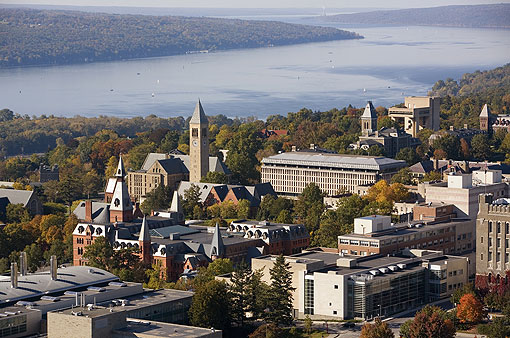

Cornell is a school located in Ithaca, New York. It was founded in 1865, its setting is rural, and its size is 745 acres. It utilizes a semester-based academic calendar, has a student-faculty ratio of 9:1 and 55.6% of its classes have fewer than 20 students. Cornell’s top five majors are engineering, business, biological and biomedical sciences, agriculture, and social sciences. Cornell has a thriving Greek life, with numerous different fraternities and sororities and three different Greek life councils. The Cornell mascot is a bear. Famous alumni include Bill Nye, Keith Olbermann, and Janet Reno.
